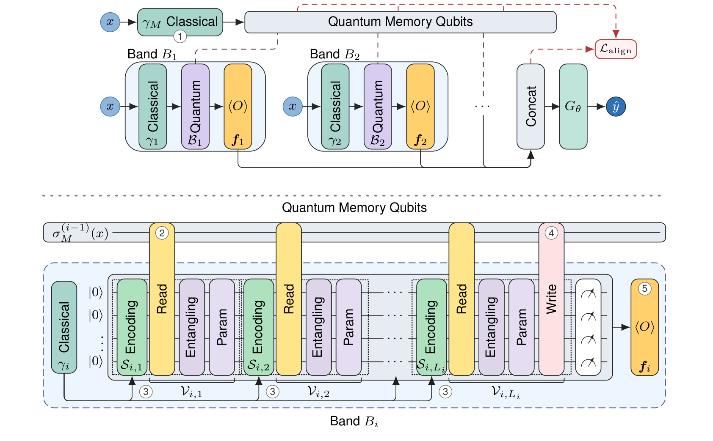
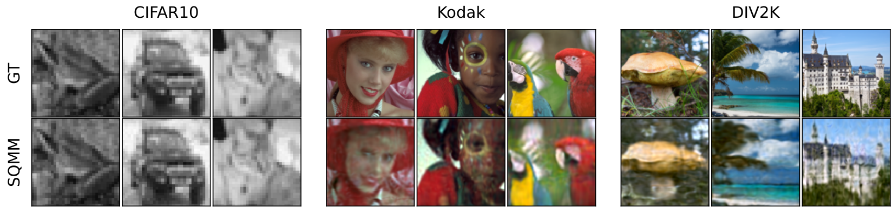
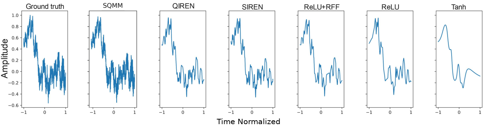

SQMM lets the sequential bands of a quantum implicit neural representation share a coherent quantum memory, so later bands can build on the computation of earlier ones.
![Animation of SQMM. On the left, ground truth signals with a moving coordinate, a scrolling Cello waveform above a slide show of the Astronaut, Camera and Coffee images. In the middle, the quantum circuit. Two memory qubits run through five bands of two data qubits each. Each band reads the memory, uploads the coordinate two to five times with learning layers, writes back to the memory except for band five, and measures its qubits. A classical decoder combines the features of all bands. On the right the reconstructions appear, with a Cello error of 0.38 times ten to the minus three.](assets/sqmm_still.png)
Main points
- Shared memory. In existing multiband QINRs the bands operate largely independently. In SQMM they communicate through a shared memory register that is never measured.
- Same Fourier structure. When memory read and write layers are input independent, the memory creates no new primitive frequencies. Later bands reuse and reweight the frequencies that already exist.
- A loss for the memory. A spectral memory alignment loss trains the memory to summarize the spectrum of the bands before it.
- Lower error. SQMM achieves the best MSE among the evaluated compact INR and QINR baselines on audio and image reconstruction. All results are simulated.
In plain words
A picture or a sound clip is usually stored as a long list of pixels or samples. Another option is to train a small model that acts like a formula for the data. You give it a position in an image or a moment in time, and it returns the color or the loudness at that point. These models, called implicit neural representations, are compact and can be queried at any point. Their quality depends on how well they capture both slow, broad patterns and fast, fine detail.
Quantum circuits are a natural fit for this task because their outputs are built from sums of waves, and a weight sets how much each wave contributes. Existing quantum models split the work among several circuit pieces that run separately and only combine their results at the very end. We let the pieces share a small quantum memory, essentially a communication lane. Each piece reads the memory, does its own work, and writes part of the result back, so later pieces can build on what earlier pieces found.
We prove that this sharing creates no new kinds of waves. It only lets later pieces reuse and reweight the waves already found. We also add a training signal that keeps a readable summary of the detail captured so far in the memory.
In quantum computer simulations on music, speech, everyday sounds and photographs, our model reconstructed the signals more accurately than the other compact classical and quantum models we compared against, at a similar size. Nothing has been run on quantum hardware yet.
How it works

- The memory is prepared from the coordinate by a one time upload.
- Each band reads the memory through input independent couplings.
- It uploads its own coordinate encoding several times.
- It writes part of its local state back into memory, and its local qubits are discarded.
- It emits Pauli expectation features, and the updated memory passes to the next band.
Why it works
Memory keeps the Fourier structure
The features of each band are sums of waves, and a frequency says how fast one of these waves oscillates as the coordinate changes. Every frequency that leaves a band, in its features or in the memory passed on, is the sum of a frequency already in the incoming memory and a frequency introduced by the band's own uploads. The read, write and trainable layers do not depend on the coordinate, so they only set the coefficients, meaning how strongly each wave contributes.
Example. If the memory holds frequencies 1 and 2 when band i starts and the band introduces 0 and 3, the memory can afterwards hold 1, 2, 4 and 5, and no other frequency.
- Ω(i)
- The set of frequencies in the memory M after band i, as a function of the coordinate x.
- Ω(i−1)
- The same set one band earlier, which is what band i receives.
- Ω(loc)
- The local frequencies, which band i introduces through its own coordinate uploads.
- ⊆
- Is contained in. The memory can hold these frequencies and no others.
- +
- All sums of one frequency from each of the two sets.
Alignment makes the memory readable
A spectrum lists how strongly each frequency is present. The theory says memory can carry a summary of the spectrum of the earlier bands, which we call the prefix. The alignment loss trains it to do so, by matching the memory spectrum to the prefix spectrum. Later bands can still reuse, refine, or correct the frequencies of earlier bands.
In words. At each frequency on the grid, the loss squares the difference between the memory spectrum and the prefix spectrum, then adds this up over the grid and over every band but the last. It reaches zero when the memory after each of these bands has the same spectrum as the bands so far, once both are scaled to sum to 1.
- L_align
- The alignment loss, added to the reconstruction loss during training only.
- i, n
- The band number and the total number of bands. The sum stops at n − 1, since no later band reads the final memory.
- ω_h
- Frequency number h on the finite grid of frequencies being compared. The sum over h covers this grid.
- P^M
- The memory spectrum, how strongly that frequency appears in the memory after band i.
- P^F
- The prefix spectrum, how strongly that frequency appears in the features of bands 1 to i.
- N
- Adds a small constant δ to every value of a spectrum and scales it to sum to 1, so that only its shape is compared.
- sg
- Stop gradient. The feature spectrum stays a fixed target, so the memory is trained to match it.
Results
SQMM has the lowest mean MSE on every dataset here, against all baselines in the paper. Each bar shows SQMM error as a percentage of the error of the strongest baseline for that dataset, so a shorter bar is better.
On Kodak and DIV2K, SQMM has the lowest MSE of all models at every resolution from 32² pixels to native size. Mean ± SD throughout, with the full tables and the seed protocol in the paper.


Does the memory matter?
This ablation on Cello gives every band of the control two further local qubits that are not shared, which matches the qubit count and parameter budget. Supervising the output spectrum directly gives a similar error, while aligning the memory spectrum gives the best result.
| Setting | Params | MSE (×10−3) |
|---|---|---|
| No memory, local qubits | 650 | 0.53 ± 0.06 |
| Memory | 642 | 0.52 ± 0.08 |
| Output spectrum loss | 642 | 0.54 ± 0.06 |
| Memory alignment loss (ours) | 642 | 0.48 ± 0.08 |
Limitations
- Simulation only. No experiment was run on quantum hardware, and only finite shot estimation and coherent gate perturbations are simulated. Controlled circuit perturbations show smooth degradation, but this remains a simulator based study rather than a complete characterization of device noise, calibration error, decoherence or measurement drift on real hardware.
- Measurement cost. Each readout feature is an average over repeated measurements called shots, and every shot is a separate circuit run on hardware. The number of shots grows in proportion to the number of features and the number of coordinates, and it grows fourfold each time the target standard error is halved. Full spectral alignment is more expensive. At every training update it probes the memory after every band but the last with every Pauli string, the measurements that together describe the memory state, and each added memory qubit multiplies the number of strings by four. This cost applies unless subset probes or shadow based estimators are used.
- Scaling. SQMM inherits the practical constraints of parameterized QML and recurrent quantum models, such as noise sensitivity, simulator cost and hardware dependent scaling with circuit depth and memory size.
Cite
TBD